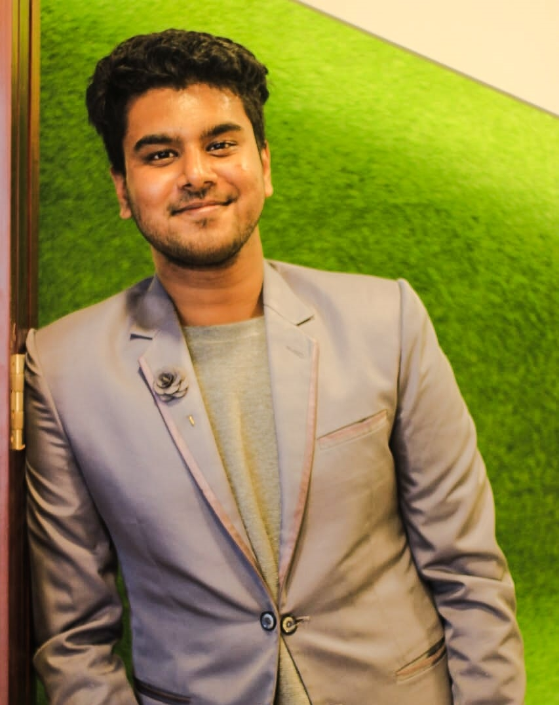

Curriculum Vitae

Name :Khalak Bin Khair
Address :House No. 407, Road Name:AftabUddin Road,
Bashundhara,R/A, Dhaka-1229
Email :Khalak Bin Khair@gmail.com
Linked In:Khalak Bin Khair
Phone :01791306494
Career Objectives:
Looking forward to build up my career in IT sector where I can apply my problem solving skill besides I have also team management skill and leadership
skill which will helps to maintain a team.
Education and qualifications:
| NO |
Certificate |
Board |
Institution |
year |
GPA |
| 1 |
Bachelor of Computer
Science and Engineering |
|
American International
University Bangladesh |
2021 |
3.58 |
| 2 |
Higher Secondary Certificate |
Chittagong |
Chittagong Biggan College |
2017 |
3.33 |
| 3 |
Secondary School Certificate |
Cumilla |
Feni Government Pailot
High School |
2015 |
4.78 |
Skills:
1.Analyzing Algorithms, Machine Learning problem and excellent problem-solving capability at Tensorflow and numpy package
2.Database analysing,well adpat with SQL
3.Visual Studio Frame work in C#
4.Introduced Basic C,C++,java programming
4.Basic Web Designing
5.Able to work within tight schedules
Language Proficiency:
Excellent in writing, listening and speaking both Bangla and English.
Extra-Curricular Activities:
1. Worked as a volunteer at AIUB Arts Club.
2. Member of computer club at college.
Interests:
1. Reading book
2. Painting
3.Playing Chess
4.Traveling with family
Personal Information:
Father’s Name : Abul Khair
Mother’s Name : Salina Akter
Nationality : Bangladeshi
Date of birth : 25th February,1999
Religion : Islam
Blood group : AB+ve
Marital status : Unmarried
Permanent Address : 141/1 Old Police Quarter, Feni.
References:
1. Name : Dr. Dip Nandi
Designation: Associate Professor and Director,
Computer Science Institution: American International University Bangladesh
E-mail : dip.nandi@aiub.edu
2. Name: Sajib Hasan
Designation: Assistant Professor, Computer Science
Institution: American International University Bangladesh
Email: sajib.hasan@aiub.edu